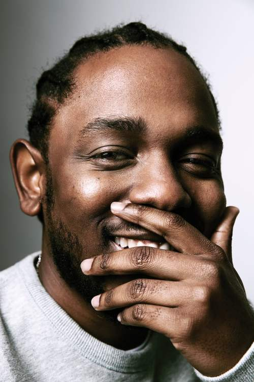

"Indisputably the most acclaimed rap artist of his generation,
Kendrick Lamar is one of those rare MCs who has achieved critical and
commercial success while earning the respect and support of those who
inspired him. After several years of development, Lamar hit his creative
and chart-topping stride in the 2010s. Good Kid, M.A.A.D City (2012), the
Grammy-winning To Pimp a Butterfly (2015), and the Grammy- and Pulitzer
Prize-winning DAMN. (2017), his three proper major-label albums, have displayed
an unmatched mix of inventive wordplay and compelling conceptual narratives,
examining internal conflict, flaunting success, and uplifting his community.
The screenplay-level detail of Lamar's writing has been enriched by a collective
of producers, instrumentalists, singers, and rappers, a high percentage of whom
-- including inspirations Dr. Dre and MC Eiht, and contemporaries Sounwave and
Jay Rock -- represent Lamar's native Los Angeles. Lamar's cinematic and
collaborative inclinations inevitably attracted the mainstream film industry.
Black Panther: The Album (2018) was the source of three of Lamar's Top Ten pop hits.
Compton, California native Kendrick Lamar Duckworth grew up immersed in hip-hop
culture and surrounded by gang activity. As a youngster, he gradually discovered
an aptitude for writing stories, poems, and lyrics, which naturally led to rapping.
He made a name for himself as K. Dot. At the age of 16 in 2003, he issued his debut
mixtape, The Hub City Threat: Minor of the Year. While it merely hinted at the
potential of the then teenager, it was impressive enough to catch the attention of
Top Dawg Entertainment and led to a long-term association with the label that steadily
propelled his career. Training Day, the Jay Rock collaboration No Sleep 'til NYC, and
C4, issued from 2005 through 2009, likewise preceded Lamar's decision to go by his
first and middle names. The last of the three was issued the same year he became part
of Black Hippy, a group whose members -- including fellow TDE artists Ab-Soul, Jay Rock,
and ScHoolboy Q -- frequently appeared on one another's mixtapes and albums.

Section.80
The first tape credited to Kendrick Lamar was Overly Dedicated, released in September
2010. Also the rapper's first commercial release, it reached enough listeners to
enter Billboard's R&B/Hip-Hop Albums chart. After XXL magazine selected him for the
2011 Freshman Class feature, Lamar released his first official album, Section.80,
that July, and crossed into the Billboard 200, reaching number 113. With deeper
conceptual narratives and sharpened melodic hooks, as well as comparative multi-dimensional
evelopment from primary producer Sounwave, the set acted as a kind of warning flare for
Lamar's mainstream rap dominance. In addition to the dozens of tracks he had appeared on by
then, Lamar had the support of veteran West Coast stars as well. During a concert later in
2011, Dr. Dre, Snoop Dogg, and Game dubbed him "The New King of the West Coast," a notion
Dre endorsed more significantly by signing Lamar to his Interscope-affiliated Aftermath label.
Good Kid, M.A.A.D City, Lamar's major-label debut, was released in October 2012 and entered
the Billboard 200 at number two. Three of its singles -- "Swimming Pools (Drank)," "Poetic
Justice," and "Bitch Don't Kill My Vibe" -- reached the Top Ten of Billboard's Hot R&B/Hip-Hop
chart and went Top 40 pop. More significantly, the album showcased Lamar as an exceptional
storyteller capable of making compelling concept albums. It led to Grammy nominations in
four categories: Best New Artist, Album of the Year, Best Rap Album, and Best Rap/Sung
Collaboration (for "Now or Never," a deluxe edition bonus cut featuring Mary J. Blige).
Miguel's "How Many Drinks?" and A$AP Rocky's "Fuckin' Problems," two tracks on which Lamar
made guest appearances, were nominated as well.
untitled unmastered.
Rather than rest, Lamar remained active during 2013-2014, touring as well as appearing
on tracks by the likes of Tame Impala, YG, and fellow Top Dawg affiliate SZA. The proud
single "i" was released in September of the latter year, became Lamar's fourth Top 40 single,
and won Grammys for Best Rap Performance and Best Rap Song. Still rolling, he announced in
early 2015 that his third album, To Pimp a Butterfly, would be out in March with tracks
featuring Snoop Dogg, Bilal, Thundercat, and George Clinton. A technical error caused the
digital version to be released eight days early, but the LP nonetheless topped the Billboard
200 with sales of 325,000 copies within its first week. It made numerous best-of lists at
the end of the year and won the Grammy for Best Rap Album. The defiant and life-affirming
"Alright," which was quickly adopted by the Black Lives Matter activist movement, along with
another single, "These Walls," took awards for Best Rap Performance, Best Rap Song, and Best
Rap/Sung Collaboration. Riding high on his wins and a striking Grammy ceremony performance,
Lamar followed up in March 2016 with untitled unmastered., consisting of demos recorded during
the previous three years. Like the previous release, it debuted at number one, and seamlessly
synthesized beatmaking and traditional musicianship from the likes of Sounwave, Terrace Martin,
and Thundercat. Within a month, Lamar added to his ever-lengthening discography of featured
appearances with his contribution to Beyoncé's "Freedom."
Led by "HUMBLE.," his first number one pop hit, DAMN. arrived in April 2017 and likewise
entered the Billboard 200 at the top. Remarkably, all 14 of its songs entered the Hot 100,
and it was certified multi-platinum within three months. Among the contributors were Rihanna
and U2, but at this point, the supporting roles were beneficial more for the guest artists
than they were for Lamar, whose artistic clout was unrivaled. Lamar snagged five more Grammys.
DAMN. won Best Rap Album. "HUMBLE." took Best Rap Performance, Best Rap Song, and Best Video.
Best Rap/Sung Performance went to "LOYALTY," the Rihanna collaboration. Another number one hit
followed in February 2018. The soundtrack Black Panther: The Album featured Lamar on every track.
"All the Stars" (with SZA), "King's Dead" (with Jay Rock and Future) and "Pray for Me" (with the
Weeknd), its three singles, eventually hit the Top Ten. That April, DAMN. won the Pulitzer
Prize for Music. It was the first time the judges recognized a work outside the genres of
classical and jazz. Months later, "King's Dead" made Lamar a 13-time Grammy winner. The track
took the award for Best Rap Performance. "All the Stars" alone was nominated in four categories,
while Black Panther was up for Album of the Year. The film itself was nominated for the Academy
Award for Best Picture." Source from: Kendrick Lamar Biography